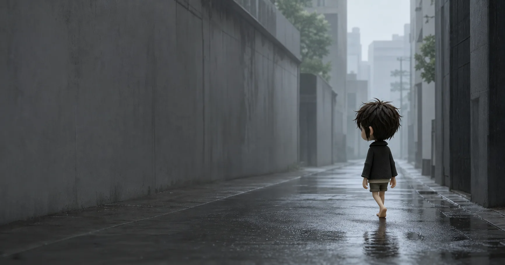

Zhiliao / Personal archive
把好奇心，做成看得见的作品。
这里收集正在生长的项目、学习笔记，以及一些还没有被命名的想法。
Why this place exists
把零散想法推进成可看、可用、可继续迭代的真实项目。
不只记录答案，也整理学习中的判断、弯路和阶段性理解。
允许作品不完美，也允许这里随着新的兴趣不断改变形状。
三个入口，分别通向完成中的作品、形成中的认识，以及尚未开放的交流。